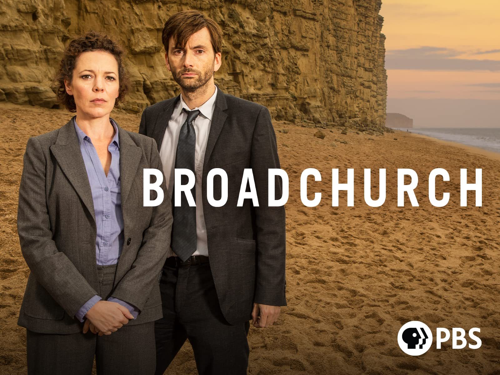
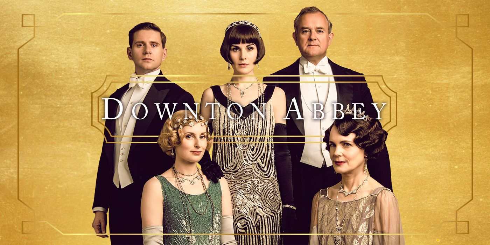
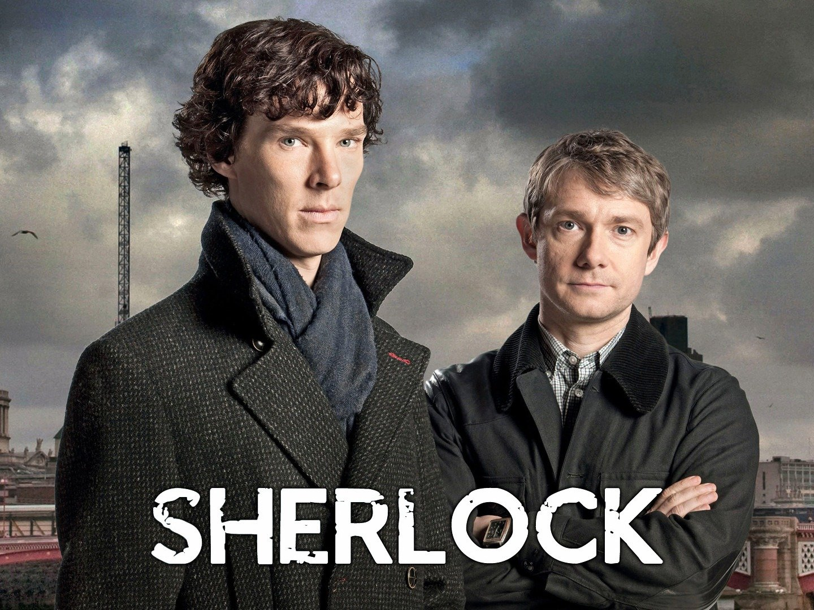
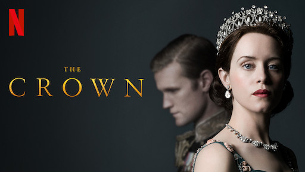

British dramas....
1. Broadchurch

Starring Oscar winner Olivia Coleman this show is the perfect thriller for your weekend bingeing. Includes spectacular performances by David Tennant and Jodie Whittaker.
2. Downtown Abbey

This quaint British drama set in the early 20th century follows an aristocratic family's journey from the sinking of the Titanic to the eventual decline of the aristocracy.
3. Sherlock

This modern adaptation of Sir Arthur Conan Doyle's starring Benedict Cumberbatch as Sherlock Holmes and Martin Freeman as Dr Watson promises to leave you spellbound. This show won several BAFTA and Primetime Emmy awards.
4. After Life
Written by the brilliant Ricky Gervais this show follows the life of Tony, a journalist grappling with the loss of his wife, and tries to find a reason to continue living his life.
5. The Crown

This Golden Globe winning series is loosely based on the life of Queen Elizabeth IV and boasts of cast members like Olivia Coleman, Claire Foy and Helena Bonham Carter.